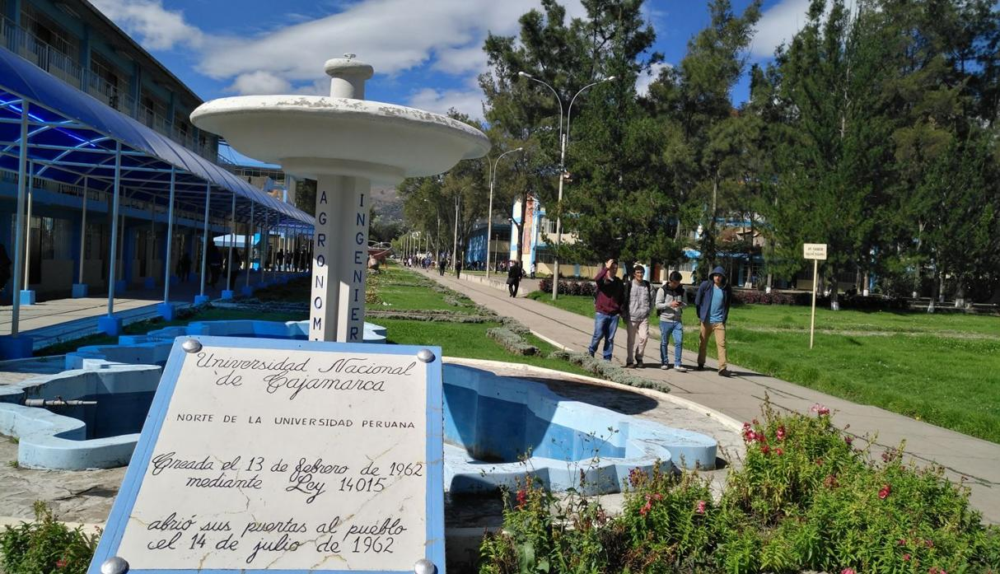
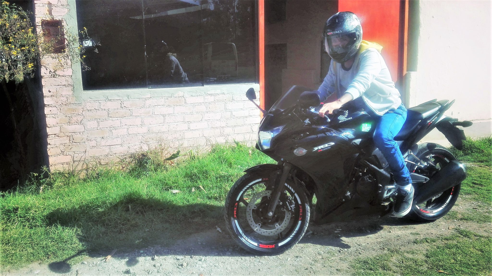

Biografia Personal

Jose Luis Huaman Lopez
Nacio en el año de 1994 Cajamarca vivo en Carretera Otuzco.km 4.5.
Informacion Personal

Educacion
Curso el Ultimo año de la carrera de Ingenieria de Sistemas en la Universidad Nacional Cajamarca
Infrmacion Personal

Hobbies
Pasear en moto disfrutar del aire libre
Informacion Personal